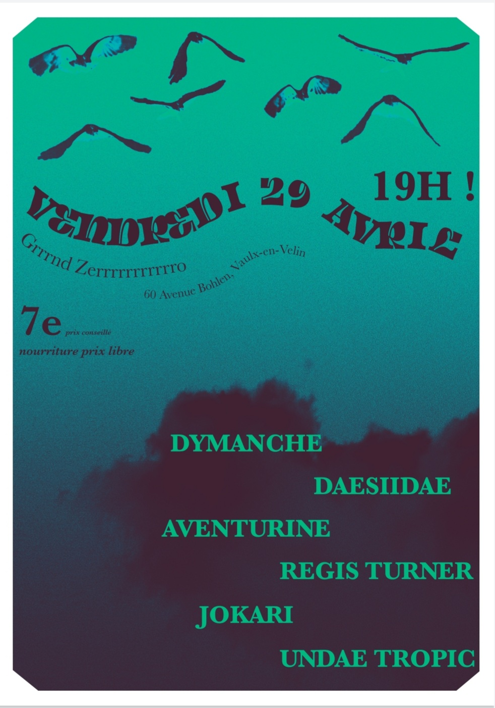
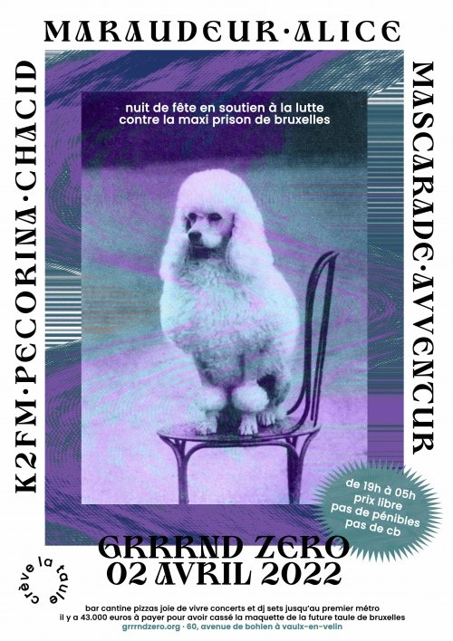
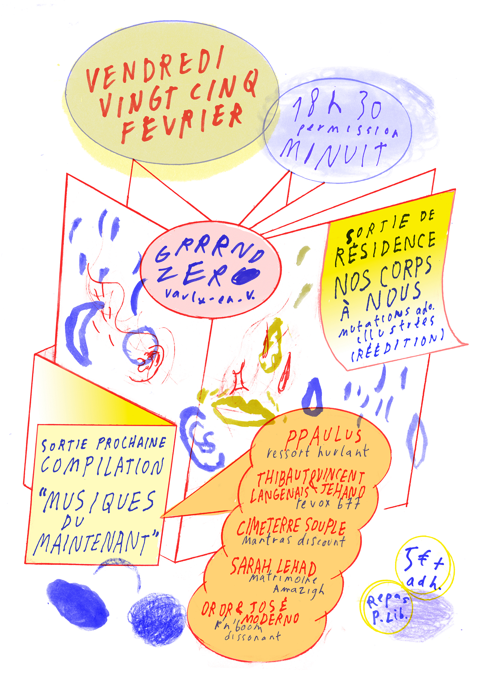
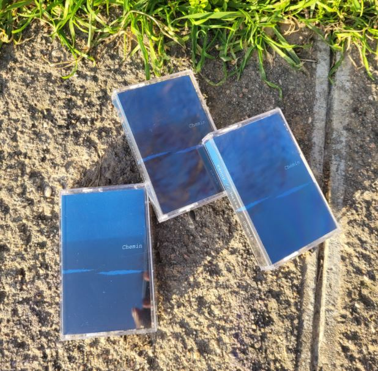
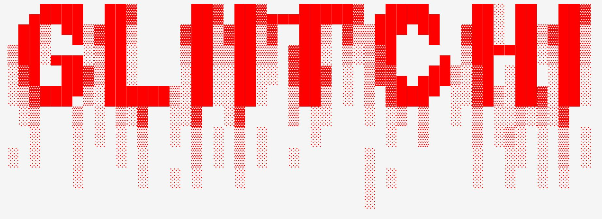
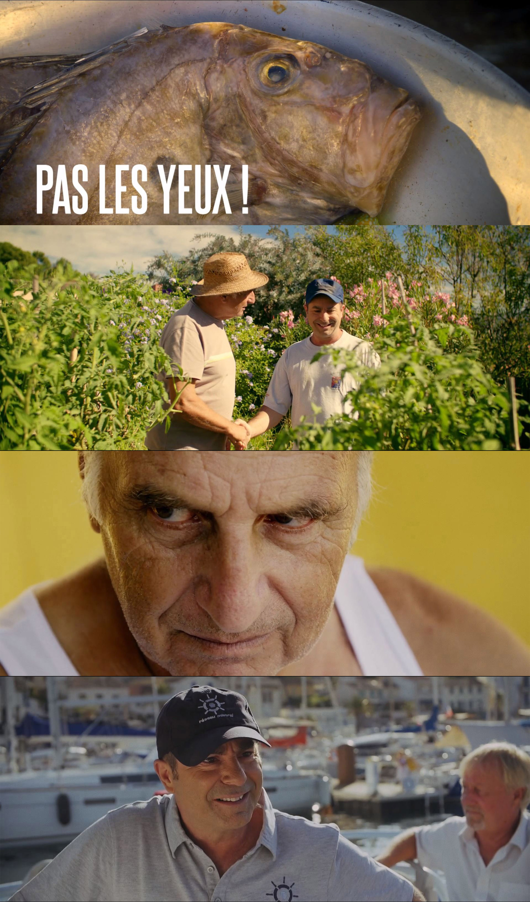

Computer Music Designer
&| Composer
L'Avenir nous le dira, Diana Soh, Opéra de Lyon 2025
ORG-MITRA, Vahan Soghomonian, 2024
Hijas de la Tierra, Ensemble Alkymia, 2024
Lazarillo, Ensemble Alkymia, 2024
Grame, Centre National de Création Musicale
ORG-RCHBRN, Vahan Soghomonian, 2023
G2, Rosella-Hightower Dance School, 2021
Artistic Projects
Ralt144MI
ctrlSh33eeEEp
Secours Cathodique
aclcalvrg
144midi
Electro-Acoustic Improvisation Group [EAIG]
La salle des fêtes, non pas celle là l'autre [LSDFNPCLL]
... more in live-coding section
Residencies
Residency at GRAME CNCM December 2024
Art Zoyd, Anonymous sounds, 2024
Champis Residency , organized by Raphaël Bastide, 2023
... more in live-coding section
Art Installations &|
Graphic Design
Overkill Festival, 2023
Variations Numériques, 2023
The Film Gallery, 2022
D.I.Y, 2022
Event Organisation
LYON ALGORAVE 2024 _ 27 April
Turner Williams Jr. - Tongue Depressor _ 24 jan 2024
René Danger - 144midi _ 18 jan 2024
Live Coding Party _ 24 nov 2023
Chiptune / Circuit-Bending Party _ 19 aug 2023
ALGORAVE _ 08 apr 2023
Salle des Fêtes _ 11 sept 2022
Live Coding Party _ 05 mar 2022
Workshops
Presentations
Live-coding Workflow, 15/03/24, B!ME _ GRAME
Live-coding Workshop, 06/03/24, B!ME _ GRAME
WinterSchool_ERG, 26/01/24, Bruxelles
Fubar Festival, 10/24, Zagreb
Amaze, 10-13/05/24, Berlin
Lips_Lab, 03/04/24, Grame, Lyon

Organisation/Live_04/23
CompositionPiece pour Accordéon et Live-coding02/23

Réalisation - Composition Informatique du mode Autonome de l'ORG de Vahan Soghomonian, Drôme Provençale 2022-2023
LiveLive à l'orgue09/22
Live/AlgoraveLe_Fil_Saint-Étienne06/22

Membre_de_l'AADA_06/22

Ingénieur_du_Son_04/22

Ingénieur_du_Son_04/22
Live/Algorave10th_birthday2022-03-20_16:40

Organisation/Performance_Live_03/22

Ingénieur_du_SonMise_en_place_Quadriphonie_02/22

Art/InstallationPerformanceGravure_sur_scie_circulaire/mix_sur_platine_01/22

Mastering/Cassette_CheminPour_CutterSansLame_01/22

Plug_in/GlitchEffects_Plug-incodé_en_Faust_01/22
Live/The_Longest_NightWinter_Solstice_MarathonTidalCycles_Cycle#82 _12/21
Compo/Vibralgo_demo_11/21 Composition Live coding sur TidalCycles + Contrôle temps-réel Yamaha TX7 au travers de Puredata avec capteurs en OSC
Compo/Secular_Moog_06/21
Pièce de Danse Augmentée Réalisation sur pure-data de programmes d'analyse de capteurs sur les danseurs et de manipulation du son en temps-réel_06/21
Compo/Interférences_Suite_05/21
Capsule/Papet_04/21
Podcast/JEAN-LUC_03/21
Création/Synthé-Demi-Écrémé_12/20

Court-Métrage/Réalisation_12/20
SoundDesign/Bruitages_12/20

Court-Métrage/Chef-Op-Son_11/20
SoundDesign/Bruitages_10/20

PerformancesLive_03-06/20
AmbianceSonore_7/19